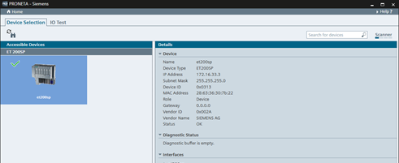

Icon
Name
Function

Refresh
Performs an immediate update of the network scan
The I/O Test task serves to check the wiring of a distributed I/O device even before installing a CPU, and to protocol the test results in a quick, error-free and simple manner.
In Device Selection mode, PRONETA Basic shows a symbolic display of all SIMATIC ET 200 devices, SIRIUS Motor Starters and SIPLUS Heating Control Systems which were found during the current network scan.

A green checkmark indicates that this device is available for I/O Test (i.e. it has a valid IP address and device name). Select the device you want to test by clicking on it. In the right window section, a table with device details (type, network configuration, port and module configuration data, …) is displayed upon selection, and the selected device is displayed with a blue background.
To proceed to the I/O Test after selecting a device as test candidate, double-click on the device, or select the “I/O Test” tab in the mode bar.
Function Bar
The following function is available in the function bar:
|
Icon |
Name |
Function |
|
|
Refresh |
Performs an immediate update of the network scan |